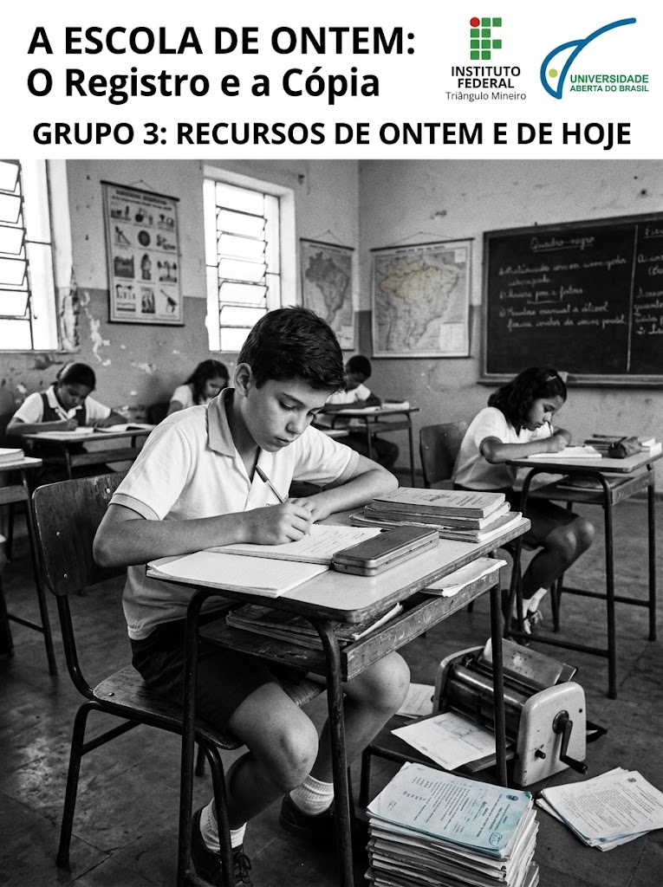
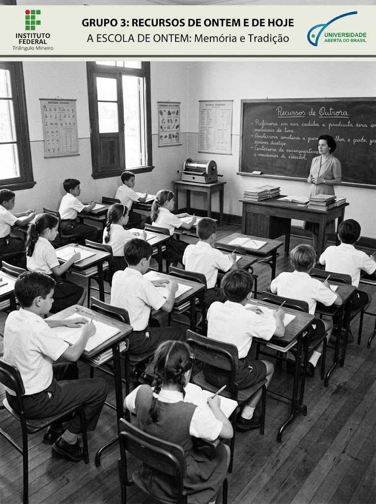
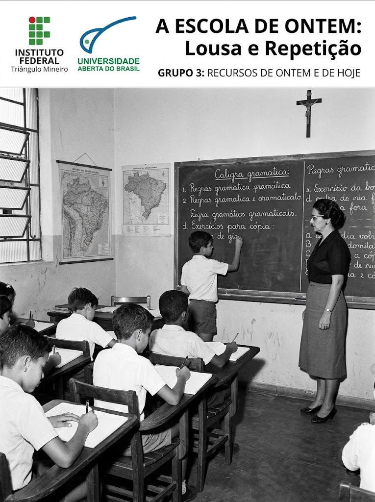
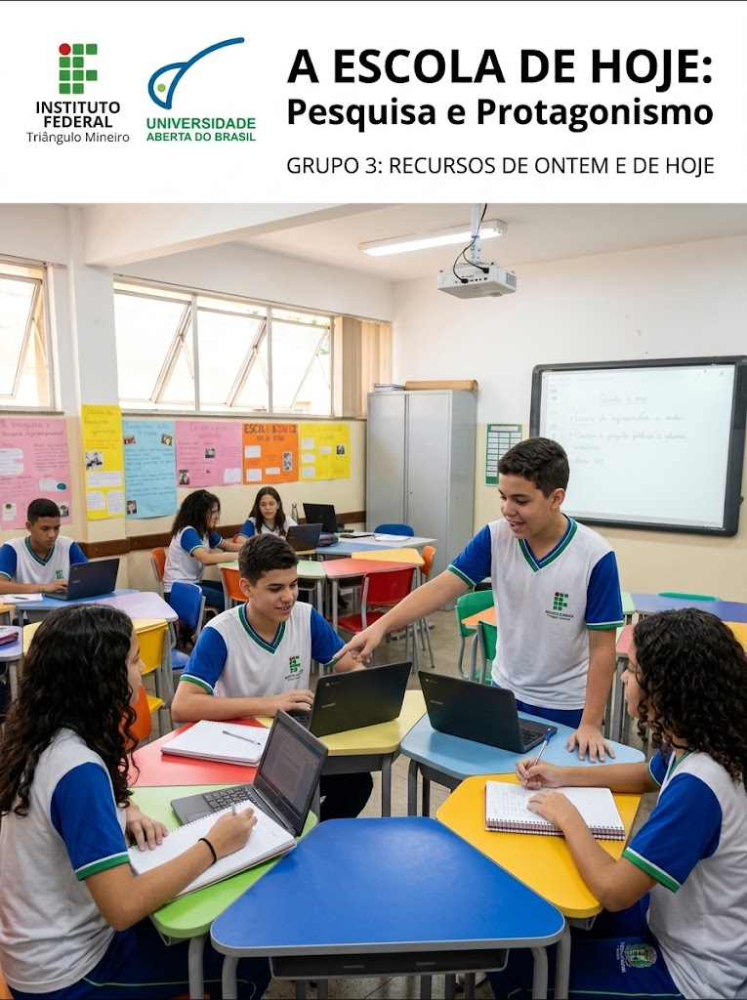
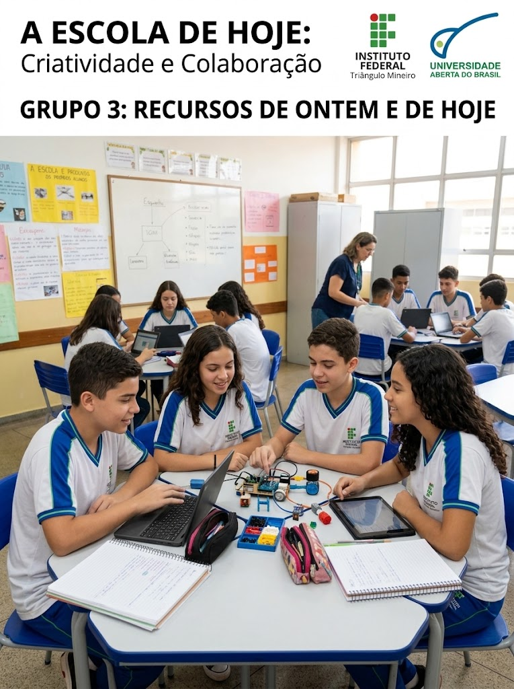
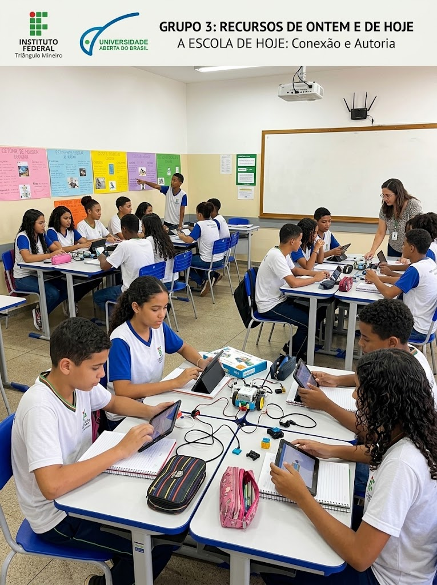

Da lousa ao mundo digital: a evolução dos recursos escolares
A escola brasileira: memórias, direitos e tecnologias

Por muitas décadas, a escola brasileira concentrou-se na reprodução e memorização: a lousa como foco absoluto, cartilhas como verdades únicas e o estudante em postura passiva. Com o mundo digital, o aprendizado ganhou ritmo investigativo: pesquisas em tempo real, mídias dinâmicas e simuladores conectam os educandos a múltiplos saberes com rapidez e profundidade.

Lousa e Repetição Foco na transmissão mecânica
Pesquisa e Protagonismo Foco na autoria e resolução ativaO docente é o coração da aprendizagem
Telas e tecnologias processam dados em segundos, mas não ensinam a pensar criticamente nem acolhem as individualidades dos estudantes. O professor segue indispensável para mediar o conhecimento, cultivar valores éticos, combater a desinformação e orientar a turma na construção de um saber humanizado e cidadão.

